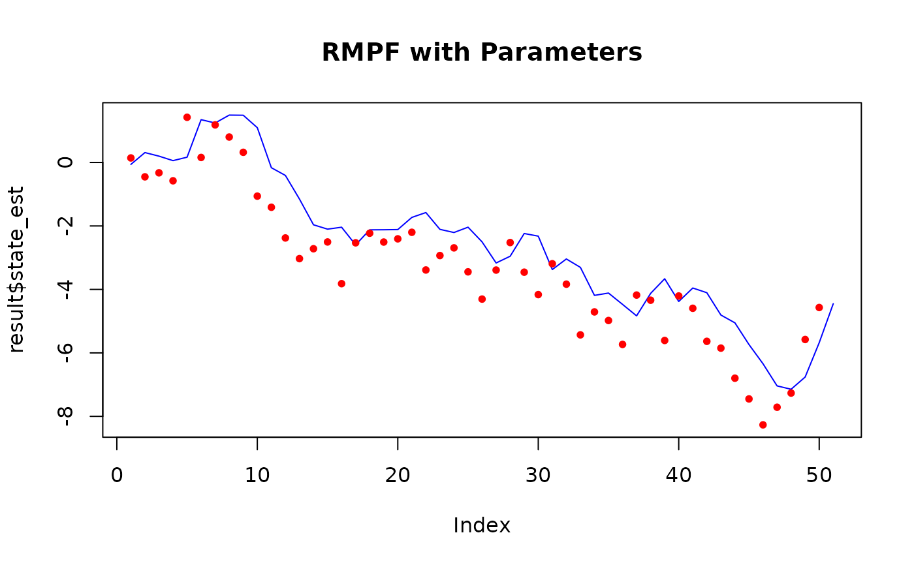
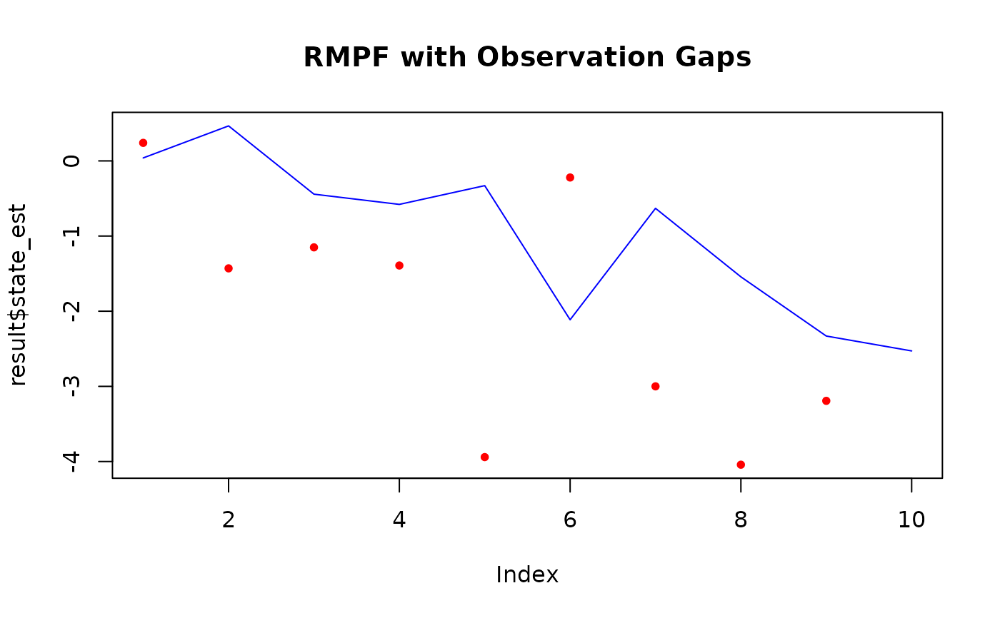

The Resample-Move Particle Filter applies a Metropolis-style move step after resampling, improving particle diversity and avoiding sample impoverishment.
Usage
resample_move_filter(
y,
num_particles,
init_fn,
transition_fn,
log_likelihood_fn,
move_fn,
obs_times = NULL,
resample_fn = c("stratified", "systematic", "multinomial"),
return_particles = TRUE,
...
)Arguments
- y
A numeric vector or matrix of observations. Each row represents an observation at a time step. If observations are not equally spaced, use the
obs_timesargument.- num_particles
A positive integer specifying the number of particles.
- init_fn
A function to initialize the particles. Should take `num_particles` and return a matrix or vector of initial states. Additional model parameters can be passed via
....- transition_fn
A function for propagating particles. Should take `particles` and optionally `t`. Additional model parameters via
....- log_likelihood_fn
A function that returns the log-likelihood for each particle given the current observation, particles, and optionally `t`. Additional parameters via
....- move_fn
A function that moves the resampled particles. Takes `particles`, optionally `t`, and returns updated particles. Can use
...for model-specific arguments.- obs_times
A numeric vector specifying observation time points. Must match the number of rows in
y, or defaults to1:nrow(y).- resample_fn
A string indicating the resampling method:
"stratified","systematic", or"multinomial". Default is"stratified".- return_particles
Logical; if
TRUE, returns the full particle and weight histories.- ...
Additional arguments passed to
init_fn,transition_fn, andlog_likelihood_fn.
Value
A list with components:
- state_est
Estimated states over time (weighted mean of particles).
- ess
Effective sample size at each time step.
- loglike
Total log-likelihood.
- loglike_history
Log-likelihood at each time step.
- algorithm
The filtering algorithm used.
- particles_history
Matrix of particle states over time (if
return_particles = TRUE).- weights_history
Matrix of particle weights over time (if
return_particles = TRUE).
The Resample-Move Particle Filter (RMPF)
The Resample-Move Particle Filter enhances the standard particle filtering framework by introducing a move step after resampling. After resampling at time \(t\), particles \(\{x_t^{(i)}\}_{i=1}^N\) are propagated via a Markov kernel \(K_t(x' \mid x)\) that leaves the target posterior \(p(x_t \mid y_{1:t})\) invariant: $$ x_t^{(i)} \sim K_t(\cdot \mid x_t^{(i)}). $$
This move step often uses a Metropolis-Hastings update that preserves the posterior distribution as the invariant distribution of \(K_t\).
The goal of the move step is to mitigate particle impoverishment — the collapse of diversity caused by resampling selecting only a few unique particles — by rejuvenating particles and exploring the state space more thoroughly. This leads to improved approximation of the filtering distribution and reduces Monte Carlo error.
The move_fn argument represents this transition kernel and should
take the current particle set as input and return the updated particles.
Additional model-specific parameters may be passed via ....
Default resampling method is stratified resampling, which has lower variance than multinomial resampling (Douc et al., 2005).
In this implementation, resampling is performed at every time step using the specified method (default: stratified), followed immediately by the move step. This follows the standard Resample-Move framework as described by Gilks and Berzuini (2001). Unlike other particle filtering variants that may use an ESS threshold to decide whether to resample, RMPF requires resampling at every step to ensure the effectiveness of the subsequent rejuvenation step.
Model Specification
All particle filter implementations assume a discrete-time state-space model consisting of:
Latent states \(x_0, x_1, \ldots, x_T\) evolve via a Markov process.
Observations \(y_1, \ldots, y_T\) are conditionally independent given the latent states.
The model is specified as: $$x_0 \sim \mu_\theta$$ $$x_t \sim f_\theta(x_t \mid x_{t-1})$$ $$y_t \sim g_\theta(y_t \mid x_t)$$
where \(\theta\) denotes model parameters passed through ....
These functions are defined by:
init_fn: draws from \(\mu_\theta\)transition_fn: defines the transition density \(f_\theta\)weight_fn: defines the observation likelihood \(g_\theta\)
References
Gilks, W. R., & Berzuini, C. (2001). Following a moving target—Monte Carlo inference for dynamic Bayesian models. Journal of the Royal Statistical Society: Series B (Statistical Methodology), 63(1), 127–146. doi:10.2307/2670179
Douc, R., Cappé, O., & Moulines, E. (2005). Comparison of Resampling Schemes for Particle Filtering. Accessible at: https://arxiv.org/abs/cs/0507025
Examples
init_fn <- function(num_particles) rnorm(num_particles, 0, 1)
transition_fn <- function(particles) particles + rnorm(length(particles))
log_likelihood_fn <- function(y, particles) {
dnorm(y, mean = particles, sd = 1, log = TRUE)
}
# Define a simple random-walk Metropolis move function
move_fn <- function(particle, y) {
proposal <- particle + rnorm(1, 0, 0.1)
log_p_current <- log_likelihood_fn(y = y, particles = particle)
log_p_proposal <- log_likelihood_fn(y = y, particles = proposal)
if (log(runif(1)) < (log_p_proposal - log_p_current)) {
return(proposal)
} else {
return(particle)
}
}
y <- cumsum(rnorm(50)) # Dummy data
num_particles <- 100
result <- resample_move_filter(
y = y,
num_particles = num_particles,
init_fn = init_fn,
transition_fn = transition_fn,
log_likelihood_fn = log_likelihood_fn,
move_fn = move_fn
)
plot(result$state_est,
type = "l", col = "blue", main = "RMPF State Estimates",
ylim = range(c(result$state_est, y))
)
points(y, col = "red", pch = 20)
# With parameters
init_fn <- function(num_particles) rnorm(num_particles, 0, 1)
transition_fn <- function(particles, mu) {
particles + rnorm(length(particles), mean = mu)
}
log_likelihood_fn <- function(y, particles, sigma) {
dnorm(y, mean = particles, sd = sigma, log = TRUE)
}
move_fn <- function(particle, y, sigma) {
proposal <- particle + rnorm(1, 0, 0.1)
log_p_curr <- log_likelihood_fn(y = y, particles = particle, sigma = sigma)
log_p_prop <- log_likelihood_fn(y = y, particles = proposal, sigma = sigma)
if (log(runif(1)) < (log_p_prop - log_p_curr)) {
return(proposal)
} else {
return(particle)
}
}
y <- cumsum(rnorm(50))
num_particles <- 100
result <- resample_move_filter(
y = y,
num_particles = num_particles,
init_fn = init_fn,
transition_fn = transition_fn,
log_likelihood_fn = log_likelihood_fn,
move_fn = move_fn,
mu = 1,
sigma = 1
)
plot(result$state_est,
type = "l", col = "blue", main = "RMPF with Parameters",
ylim = range(c(result$state_est, y))
)
points(y, col = "red", pch = 20)

# With observation gaps
simulate_ssm <- function(num_steps, mu, sigma) {
x <- numeric(num_steps)
y <- numeric(num_steps)
x[1] <- rnorm(1, mean = 0, sd = sigma)
y[1] <- rnorm(1, mean = x[1], sd = sigma)
for (t in 2:num_steps) {
x[t] <- mu * x[t - 1] + sin(x[t - 1]) + rnorm(1, mean = 0, sd = sigma)
y[t] <- x[t] + rnorm(1, mean = 0, sd = sigma)
}
y
}
data <- simulate_ssm(10, mu = 1, sigma = 1)
obs_times <- c(1, 2, 3, 5, 6, 7, 8, 9, 10) # skip t=4
data_obs <- data[obs_times]
init_fn <- function(num_particles) rnorm(num_particles, 0, 1)
transition_fn <- function(particles, mu) {
particles + rnorm(length(particles), mean = mu)
}
log_likelihood_fn <- function(y, particles, sigma) {
dnorm(y, mean = particles, sd = sigma, log = TRUE)
}
move_fn <- function(particle, y, sigma) {
proposal <- particle + rnorm(1, 0, 0.1)
log_p_cur <- log_likelihood_fn(y = y, particles = particle, sigma = sigma)
log_p_prop <- log_likelihood_fn(y = y, particles = proposal, sigma = sigma)
if (log(runif(1)) < (log_p_prop - log_p_cur)) {
return(proposal)
} else {
return(particle)
}
}
result <- resample_move_filter(
y = data_obs,
num_particles = 100,
init_fn = init_fn,
transition_fn = transition_fn,
log_likelihood_fn = log_likelihood_fn,
move_fn = move_fn,
obs_times = obs_times,
mu = 1,
sigma = 1
)
plot(result$state_est,
type = "l", col = "blue", main = "RMPF with Observation Gaps",
ylim = range(c(result$state_est, data))
)
points(data_obs, col = "red", pch = 20)
